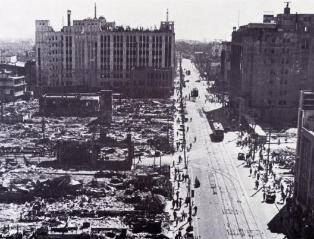

昭和二十年五月二十五日、新宿は一夜にして、伊勢丹、三越の建物だけ残して、見渡す限りの焼野原、新宿生まれの主人の許に嫁ぎ、故郷のない私達でした。
長男四才長女一才半と、出征した主人を待ち、掘立て小屋のバラックで、八月十五日を迎えました。
現在の新宿西口は青梅口と云っておりました。 小さな駅で、坂を少し登れば現在の小田急新宿です。
現在の安田生命の所が、私達の住居で、当時は焼野原に、十軒余りバラック住居の人達が居りました。
ラジオの有る家は一軒だけでしたが、ギラギラ焼け付く太陽の中、皆んなが集まり、玉音放送をききました。
陛下のお言葉は聴き取り難く、戦争は終わったらしい位の事でした。 ビルマに出征している主人は、もう帰れないのではないか、私達はどうなるのかと胸の痛くなる思いでした。
数日後には御飯を山盛りにして家族が揃っている時、四コマ程の漫画のビラを米軍が撤き「戦争は終わっていない、最後の一人まで戦うぞ」との文面には、只唯不安の毎日でした。
私共の住居からは、駅から出てくる人が良く見えて、復員姿のリュックサックを担いだ人を見ると、主人ではないかと、二十三年六月、戦死の広報が届くまで、待ちに待ちましたが、帰って来ることは、ありませんでした。
幸い子供も無事成長して、私の務めも果たした思いです。 長くて短い五十年でした。
逝きし人 生まれにし土地や 夏の星
生れし土地 いつ帰り来る 夏の月
還らぬを 知りつつ眺む 夏の月
戦後の新宿昭和20年5月25日の空襲で消失した終戦直後の新宿

（左のビルが伊勢丹、右のビルが三越）引用:ジャパンアーカイブス 焦土となった新宿大通り